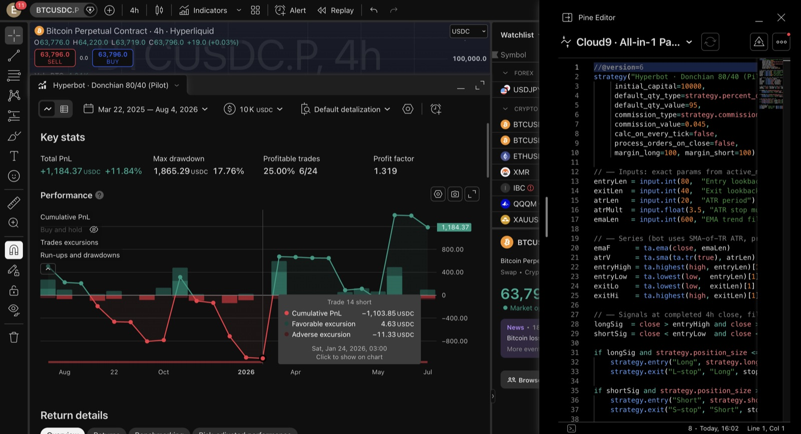
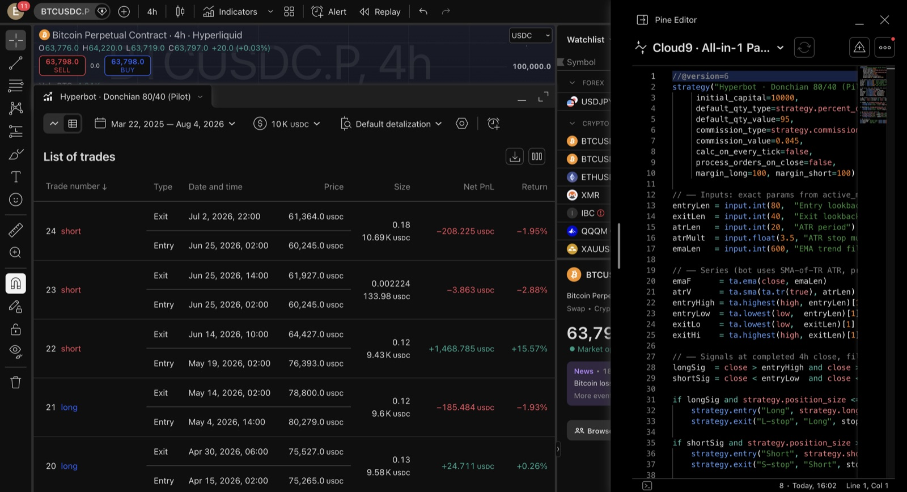

We already backtested the retail favourites.
Thirteen of the most popular TradingView indicators, same test, real fees. Use these as your starting point, then test your own with the guide below.
| Indicator | Total P&L | |
|---|---|---|
| 1 | Chandelier Exit | +2.08% |
| 2 | Golden Cross (1h) | +1.67% |
| 3 | Bollinger breakout | +1.49% |
| 4 | SuperTrend | +1.41% |
| 5 | Squeeze Momentum | −2.07% |
| 6 | Hull Suite | −2.23% |
| 7 | Ichimoku | −5.35% |
| 8 | WaveTrend | −5.78% |
| 9 | RSI 30/70 | −9.29% |
| 10 | Bollinger mean reversion | −10.92% |
| 11 | UT Bot | −11.28% |
| 12 | MACD | −15.60% |
| · | Buy & hold market | −20.20% |
Binance futures BTC/ETH/SOL perps, 1h candles, real fees, long-only, 2025-06-26 → 2026-08-22 (~14 months). Buy & hold is the average of the three over the same window. This is one test window, not a law: a different window, timeframe, or market gives different numbers.
See all 13 results and the Pine code🤖 My bitcoin bot's live strategy, verified in TradingView
My bot trades a Donchian breakout system on BTC (4h). One prompt made Claude port the exact rules to Pine, apply them to the Hyperliquid BTC perp chart, and run the tester over ~17 months — with taker fees and next-bar fills, no lookahead.
Read it straight: just holding BTC over these 17 months lost 42.1%. The strategy made +11.8% — mostly on the short side. The difference between those two numbers is the +53.9-point "Strategy outperformance" TradingView reports. And a 25% win rate that still profits is what trend-following really looks like: many small losses, a few huge winners (best trade: +15.6% in one short). No cherry-picking: full stats below.


Get the apps and the bridge.
1 Get the two apps + the bridge
TradingView Desktop (the app, not the website — free account is fine) and Claude Code. Node.js 18+ if you don't have it. Then install the open-source MCP bridge:
git clone https://github.com/tradesdontlie/tradingview-mcp.git ~/tradingview-mcp cd ~/tradingview-mcp && npm install claude mcp add --scope user tradingview -- node ~/tradingview-mcp/src/server.js
→ tradingview.com/desktop · claude.com/code · nodejs.org · Full install walkthrough with screenshots: the setup guide.
2 Start TradingView in debug mode
Quit TradingView fully first (this matters — a normally-launched instance blocks the bridge). Then either ask Claude to run tv_launch, or start it yourself:
# macOS open -a TradingView --args --remote-debugging-port=9222
Windows: run scripts\launch_tv_debug.bat from the repo. Verify with curl http://127.0.0.1:9222/json/version — it should print JSON.
3 Sanity check
New Claude Code session:
Use tv_health_check to verify TradingView is connected, then tell me what's on my chart.
📝 The master prompt
This is the whole trick. Fill in your market, timeframe and rules in plain English — Claude handles Pine syntax, compiling, applying to the chart and reading the tester. The cost/fill lines at the bottom are what make the result honest; keep them.
Backtest this strategy in TradingView using the tradingview MCP tools: MARKET: BINANCE:BTCUSDT.P TIMEFRAME: 4h RULES - Go LONG when the close breaks above the highest high of the previous 80 bars AND the close is above the 600-bar EMA. - Go SHORT when the close breaks below the lowest low of the previous 80 bars AND the close is below the 600-bar EMA. - EXIT a long when the close drops below the lowest low of the previous 40 bars; mirror for shorts. - Also protect every trade with a stop at 3.5 × ATR(20) from entry. REALISM (keep these) - Pine Script v6 strategy(), initial_capital = 10000, 95% of equity per position, commission 0.045% per side. - Signals evaluate on CLOSED bars only and fill at the NEXT bar open — no lookahead, no intrabar magic. DO 1. Write the strategy, open the Pine editor, compile it, and add it to the chart on that symbol + timeframe. 2. Open the Strategy Tester. 3. Report back: net profit %, max drawdown, profit factor, win rate, total trades, average trade, and the 3 biggest winners and losers with dates. 4. Screenshot the Strategy Tester panel. If anything errors (compile error, panel not found, old TV instance running), debug it yourself and continue.
Swap the rules for anything: "buy the pullback to the 20 EMA in an uptrend, stop under the last swing low, take profit at 2R" works exactly the same way. If you can say it, it can be tested.
⚙️ What Claude actually does with it
So you know what "working" looks like: it writes a Pine v6 strategy(), injects it into TradingView's Pine editor, hits compile, fixes its own compile errors, adds it to the chart, opens the Strategy Tester, and reads the Key stats + trade list straight off the panel. You watch it happen live on your chart — nothing is simulated outside TradingView.
The exact Pine strategy from the run above (if you want to paste it manually)
//@version=6
strategy("Donchian 80/40 Breakout", overlay=true,
initial_capital=10000,
default_qty_type=strategy.percent_of_equity,
default_qty_value=95,
commission_type=strategy.commission.percent,
commission_value=0.045,
calc_on_every_tick=false,
process_orders_on_close=false,
margin_long=100, margin_short=100)
entryLen = input.int(80, "Entry lookback (Donchian)")
exitLen = input.int(40, "Exit lookback (Donchian)")
atrLen = input.int(20, "ATR period")
atrMult = input.float(3.5, "ATR stop multiple")
emaLen = input.int(600, "EMA trend filter")
emaF = ta.ema(close, emaLen)
atrV = ta.sma(ta.tr(true), atrLen)
entryHigh = ta.highest(high, entryLen)[1]
entryLow = ta.lowest(low, entryLen)[1]
exitLo = ta.lowest(low, exitLen)[1]
exitHi = ta.highest(high, exitLen)[1]
longSig = close > entryHigh and close > emaF
shortSig = close < entryLow and close < emaF
if longSig and strategy.position_size <= 0
strategy.entry("Long", strategy.long)
strategy.exit("L-stop", "Long", stop=close - atrV * atrMult)
if shortSig and strategy.position_size >= 0
strategy.entry("Short", strategy.short)
strategy.exit("S-stop", "Short", stop=close + atrV * atrMult)
if strategy.position_size > 0 and close < exitLo
strategy.close("Long", comment="Donchian exit")
if strategy.position_size < 0 and close > exitHi
strategy.close("Short", comment="Donchian exit")
plot(entryHigh, "80-bar high", color.new(color.teal, 40))
plot(entryLow, "80-bar low", color.new(color.red, 40))
plot(emaF, "EMA filter", color.new(color.orange, 0), linewidth=2)🛡️ Then make it attack its own result
A green backtest is a hypothesis, not a green light. Send this straight after:
Now audit this backtest like a skeptical quant. Check: trade count (is 24 trades even significant?), whether performance came from 1-2 outlier trades, how sensitive results are if the lookbacks change ±20%, what the strategy does in a range vs a trend, costs I haven't modeled (funding, slippage, gaps), and any way the test flatters itself. Argue the bear case. Then tell me what you'd need to see before trusting it with real money.
This is the difference between "AI made me a strategy" content and actually knowing what you own. My bot's own research pipeline rejected dozens of variants before promoting this one — one backtest proves nothing on its own.
Honestly: paste the error into Claude and tell it to fix it — it can see the app and debug itself. The three snags that actually happen:
More backtests every week.
Follow @cloud9.markets for the next indicator we put through the same test, with the full results.